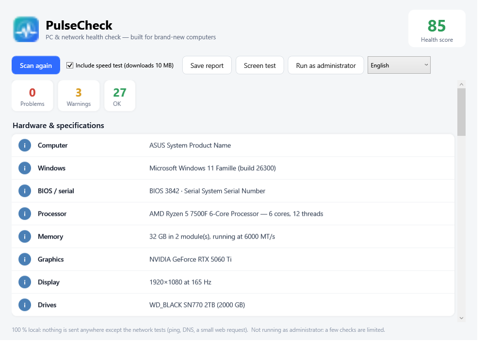

A free Windows tool that inspects a new computer in about a minute: real specs, battery wear, memory speed, preinstalled junk, drive health, security and your internet connection.
Download for Windows
Listings are hard to verify. PulseCheck tells you whether the machine matches what you paid for.
CPU, RAM, graphics, drives, screen resolution and refresh rate — compare with the box.
A "new" laptop with a worn battery may be used or refurbished.
Detects RAM running below its rated speed or in single-channel.
Finds trial antivirus and promotional apps you can remove.
Full-screen colours to spot dead or stuck pixels in seconds.
Finds where a connection problem is: your PC, the router, your provider or DNS.
One file. Double-click to run — nothing to install.
Click “Scan my PC”. It takes about a minute.
Each finding comes with a plain-language fix and a shareable report.
Nothing is uploaded and there is no telemetry. PulseCheck only reads information from your PC. The only traffic is the connection test (ping, DNS, a small web request and an optional 10 MB speed test). The source code is public.
The file is not code-signed yet, so SmartScreen warns about any unrecognised program. Click “More info”, then “Run anyway”. You can check the SHA-256 hash published with each release, or build it yourself from the source.
No. It is read-only and only suggests fixes. You decide what to do.
Yes, free and open source (MIT license).